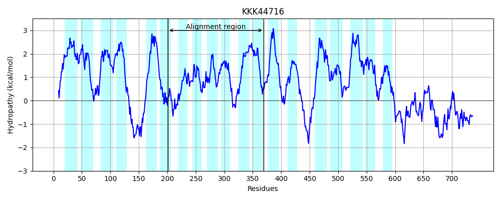

Hit Accession: KKK44716
Hit TCID: 9.B.14.1.19
Hit Description: gnl|BL_ORD_ID|5943 gnl|TC-DB|KKK44716|9.B.14.1.19 hypothetical protein Lokiarch_16060 [Lokiarchaeum sp. GC14_75]
Mach Len: 170
e:0.000397
Query TMS Count : 7
Hit TMS Count: 19
TMS-Overlap Score: 4.750000
Predicted Substrates:None
BLAST Alignment:
Score: 92 , Bit scores: 40 bits, E-value: 4.0e-04, Alignment length: 170, Percentage identity: 24
Query: 43 INTFIIDKYNFITL----CTITMFIIWTILQFY--IDKKLKPVYITDQKFIAIILTIVVSLTQRV-------------TDFSSTQSIYMSIPFLAPAIFIIGGIMLFISTFNSLDETAENNNKIKKLMIKGLI-------IINISFIVMMVLTPYWYLYLIVYLIFLLFL 186
+N+ II K+NFI T+ + I ++ F+ +D L P Y F L I +++ R+ +FSS M I + + +I +M+F +N L + IK++++K +I +I + I+ V+T +L+ ++L + FL
Sbjct: 201 LNSRIITKFNFIPFENYHKTMGLNIFEAVITFFSGVDHALIPRYFVFYTFFLSSL-IFYNISLRIFKNQHLAIFSVFILEFSSLGFSIMMIQYWPSGLSLIMCLMVFFLLYNRLQNFVQLEPPIKRIILKNIISTYILITLIFVGAILTHVITAAIFLFSFLWLYLIYFL 369 | Protein Hydropathy Plots: |
|---|
|  |
Pairwise Alignment-Hydropathy Plot:
|
|---|
|